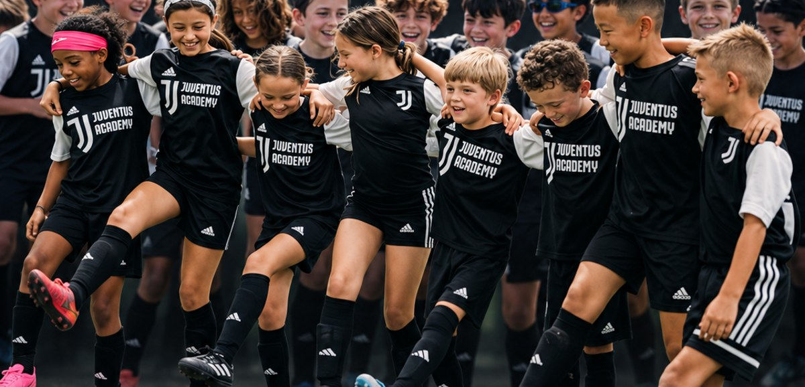

|
Hi Maria,
Juventus Academy coaches are flying in from Italy, and your player can train with them without leaving Chicago.
At the Juventus ID Camp, your player will:
| ✓ | Train with official Juventus Academy coaches | | ✓ | Work on technique and game intelligence with the Juventus methodology | | ✓ | Get the chance to show their talent: standout players can earn a Juventus experience in Italy |
📅 November 14–15 · 10 AM–2 PM
📍 Olympic Park, Schaumburg, IL
⚽ Boys and girls 6–16, players and goalkeepers |

More than 300 Chicago-area families have trained with us in recent years.
|